Collections
Several items (numbers, variables, expressions, etc.) separated by commas form a sequence. A sequence can be assigned to a name.
| > | x,sqrt(2),evalf(Pi); |
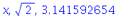
| > | s:= %; |
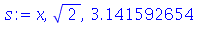
If you enclose a sequence in brackets [], you get a list. Many Maple commands accept lists as arguments, and you can extract one or more of the members of a given list.
| > | L:= [s,s]; |
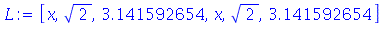
| > | L[3]; |
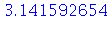
| > | L[2..5]; |
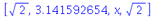
If you enclose a sequence in braces {}, you get a set. In a set, the elements have no fixed ordering and duplicates are removed.
| > | T:= {s,1,sqrt(2)}; |
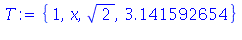
To convert a list or set back into a sequence, use the command op.
| > | op(L); |
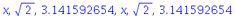
| > | op(T); |
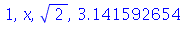
Equations
An equation in Maple is an expression with an equals sign in it. Remember, = and := are quite different to Maple.
| > | x^2 = 1; |
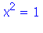
| > | x^2 := 1; |
Error, invalid left hand side of assignment
You can solve many simple equations (and even some not-simple ones) using solve. If multiple solutions are found, a sequence is returned.
| > | solve( x^2=1, x ); |
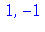
| > | solve( x^4=1, x ); |
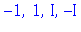
Notice that you can get complex numbers (I is the square root of -1) as results. We are not interested in those solutions for this course.
You don't always get every possible solution. The following equation has infinitely many solutions, of course.
| > | solve( sin(theta)=1/2, theta ); |
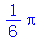
In some cases, solve doesn't give you the kind of information you might really want. When this happens, you may be able to get numerical answers using evalf.
| > | solve( sin(x^2)=tan(x)+1, x ); |
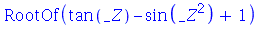
| > | evalf(%); |
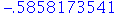
Or, you can try fsolve to get purely numerical (and approximate) answers.
| > | fsolve( sin(x^2)=tan(x)+1, x ); |
You can give fsolve a starting approximation. This can affect the answer and reveal solutions missed by solve.
| > | fsolve( sin(x^2)=tan(x)+1, x=2 ); |
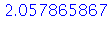
You can also try to solve a set of equations with a set of unknown variables.
| > | eqns:= { u^2+2*u*v=2, u-v+v^2=1 }; |
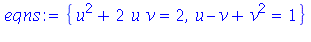
| > | solve( eqns, {u,v} ); |
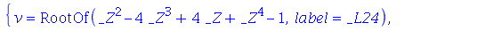
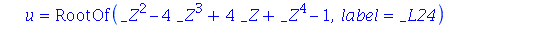
Here we show that allvalues is another way to locate multiple solutions. This may be useful when you get RootOf in your results.
| > | evalf(%); |
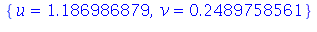
| > | evalf(allvalues([%%])); |
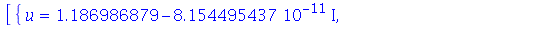
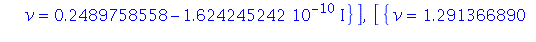
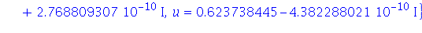
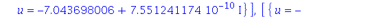
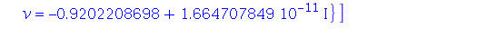
In this answer, the results appear to be complex, but the imaginary parts are so small that they probably just represent arithmetic rounding errors in floating-point calculations.
Solving equations is done not for fun but for some purpose. You need to keep the application in mind in order to find meaningful and reasonable solutions to such problems.